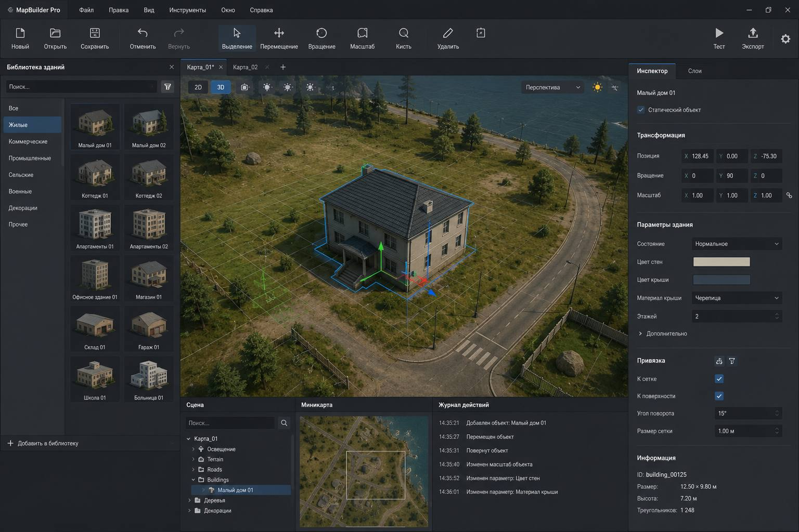

Генератор объемной застройки
Экономьте до 2–3 дней на концепции: задайте параметры участка, получите варианты застройки с автоматически пересчитанными ТЭПами и экспортируйте результат в привычные форматы.
Быстрый демо-режим без установки и интеграций
Быстрые концепции
Создавайте базовые объёмы зданий за минуты вместо дней ручного моделирования.
Параметрическое редактирование
Меняйте этажность, площади и высоту, система автоматически пересчитывает ключевые метрики проекта.
Метрики и экспорт
Анализируйте ТЭПы и выгружайте данные для дальнейшей работы в привычных инструментах.
Как это работает
Генератор работает в несколько понятных шагов: вы отмечаете участок, задаёте параметры зданий и получаете 3D‑застройку, которую можно дорабатывать в реальном времени — прямо в браузере.
Отметьте участок застройки
После запуска демо вы видите интерактивную сцену. В интерфейсе появляется подсказка вроде «Готов к работе. Кликните на земле, чтобы добавить точку» — это означает, что можно начинать отмечать границы участка.
Кликайте по земле, чтобы поставить точки контура. Каждая точка — это вершина будущей области застройки. Соединяя точки, вы формируете замкнутый контур, внутри которого генератор будет создавать здания.
Подходит для любых сценариев: от небольших участков под точечную застройку до крупных площадок, где нужно быстро прикинуть несколько вариантов планировки.
Запустите генерацию зданий
Когда контур замкнут и участок отмечен, вы переходите к настройке параметров застройки. В интерфейсе доступны базовые настройки: тип застройки (жилое, коммерческое и т.п.), высота, плотность и другие параметры — для них используются понятные контролы (ползунки, селекты, поля ввода).
Далее вы нажимаете кнопку генерации. Генератор автоматически создаёт внутри выбранной области набор 3D‑объёмов зданий и добавляет их во внутренний менеджер зданий — то есть каждое здание фиксируется в системе и становится доступно для дальнейшего редактирования и анализа.
Всё происходит за секунды: вы сразу видите, как заполняется участок и насколько плотной получается застройка.
Анализируйте и редактируйте
После генерации система показывает служебную информацию в блоке статистики — там виден текущий режим работы (например, «Рисование» или «Редактирование») и количество созданных зданий. Это помогает понимать, на каком шаге процесса вы находитесь и сколько объектов уже сгенерировано.
Переключившись в режим редактирования, вы можете выбирать здания и менять их параметры: высоту, тип, иногда форму или другие характеристики — в зависимости от настроек демо. Все изменения сразу отображаются на 3D‑сцене, поэтому удобно подбирать конфигурацию застройки и сравнивать разные сценарии вживую.
Такой режим подходит как для быстрых «черновых» концепций, так и для более детальной проработки вариантов перед передачей в профильные CAD/BIM‑системы.
Онлайн-демо генератора
Оцените работу генератора на тестовом участке. Полный функционал доступен по ключу доступа.
